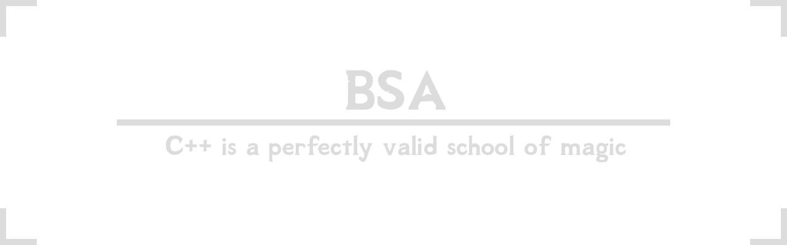

Contents
Overview
What is a BSA?
The Bethesda archive file is a proprietary format used to store game files for the The Elder Scrolls and Fallout series of games beginning with the The Elder Scrolls III. This format is essentially a zip file which stores some extra meta information to be used with their internal virtual filesystem. There are many tools that can be used to work with these files, but most are written as user facing applications, without the intention to be used as a library. bsa intends to provide a low-ish level interface for C++ programmers to work with the format.
Why bsa?
It's written in contemporary C++
Nope, it's not written in C#, Pascal, or Python. It's all native, with contemporary C++ features in mind. bsa provides interfaces that model standard containers, so that programmers intuitively understand how to work with its interface without needing to dive into the documentation.
It's actively tested
The testsuite covers a wide range of features, ensuring that bsa handles archives accurately, and that bugs never regress.
It's low overhead
bsa primarily stores no-copy views into file data/strings so that objects are cheap to copy and the resulting memory overhead is low. However, bsa can also take ownership of data, as a convenience.
It's low level
bsa provides low level interfaces into the underlying data, so that programmers who feel they can "do it better" don't feel burdened by arbitrary restrictions. This does not mean that there aren't high level interfaces, it simply means that bsa will step out of your way when appropriate.
Examples
Reading
#include <bsa/tes4.hpp> #include <cstdio> #include <filesystem> int main() { std::filesystem::path oblivion{ "path/to/oblivion" }; bsa::tes4::archive bsa; bsa.read(oblivion / "Data/Oblivion - Voices2.bsa"); const auto file = bsa["sound/voice/oblivion.esm/imperial/m"]["testtoddquest_testtoddhappy_00027fa2_1.mp3"]; if (file) { const auto bytes = file->as_bytes(); const auto out = std::fopen("happy.mp3", "wb"); std::fwrite(bytes.data(), 1, bytes.size_bytes(), out); std::fclose(out); } }
Writing
#include <bsa/tes4.hpp> #include <cstddef> #include <utility> int main() { const char payload[] = { "Hello world!\n" }; bsa::tes4::file f; f.set_data({ reinterpret_cast<const std::byte*>(payload), sizeof(payload) - 1 }); bsa::tes4::directory d; d.insert("hello.txt", std::move(f)); bsa::tes4::archive archive; archive.insert("misc", std::move(d)); archive.archive_flags(bsa::tes4::archive_flag::file_strings | bsa::tes4::archive_flag::directory_strings); archive.archive_types(bsa::tes4::archive_type::misc); archive.write("example.bsa", bsa::tes4::version::sse); }
Integration
bsa uses CMake as its primary build system. Assuming that bsa and its dependencies have been installed to a place where CMake can find it, then using it in your project is as simple as:
find_package(bsa REQUIRED CONFIG)
target_link_libraries(${PROJECT_NAME} PUBLIC bsa::bsa)
Important Notes
bsauses copy-on-write semantics. Under the hood, it memory maps input files and stores no-copy views into that data, so that the resulting memory profile is very low. As a consequence, this means that archives you wish to read from must be stored on disk.bsacan not read from arbitrary input streams.- If the
hashof onefilecompares equal to thehashof anotherfile, then they are equal. It doesn't matter if they have different file names, or if they store different data blobs. The game engine uniquely identifiesfile's based on theirhashalone. - UTF-8 inputs are not well formed. The game engine has a crippling bug where extended ascii characters can index out-of-bounds, producing unreproducible hashes. It is the user's job to ensure they aren't attempting to store paths which contain such characters. The game engine will accept them, but it will never be able to reproducibly locate them.
- The game engine normalizes paths to use the
\character instead of the standard/. As such, users should be aware that file paths retrieved from the virtual file system may not constitute valid paths on their native file system. - Avoid writing file paths which are close to the limit of
MAX_PATH. Bethesda uses fixed buffers everywhere with no input validation, so they will most likely crash the game. - Make sure to lexically normalize your paths before you pass them. Bethesda uses really basic file extension detection methods, and
bsareplicates those methods. - Files can not be split into more than 4 chunks inside a ba2. Bethesda uses a fixed buffer to store the chunks, and exceeding that limit will likely crash the game.
- The XMem Codec available for compressing Xbox archives is ostensibly LZXD which is available in the XNA 4.0 framework. Since this is a C#/Windows only library, and I can't find any C/C++ implementation of the method,
bsadoes not support Xbox compression.
Dependencies
Consumption
Development
Alternatives
- C#
- C++
- Java
- FO3 Archive Utility (no source)
- Pascal
- Python
- Unknown
- BSA Commander (no source)
- BSA Unpacker (no source)
- TES4BSA (no source)